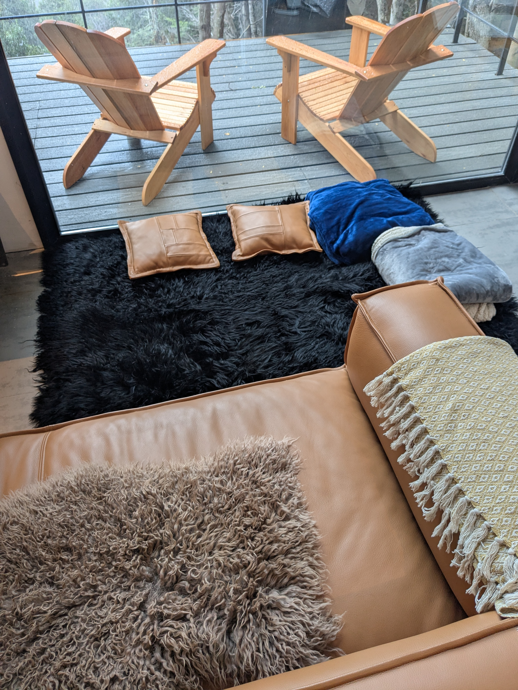
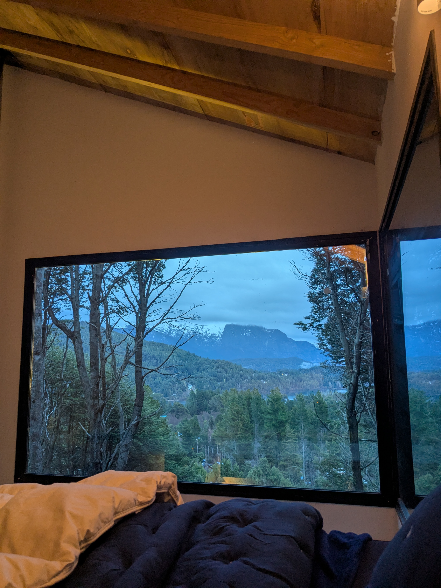
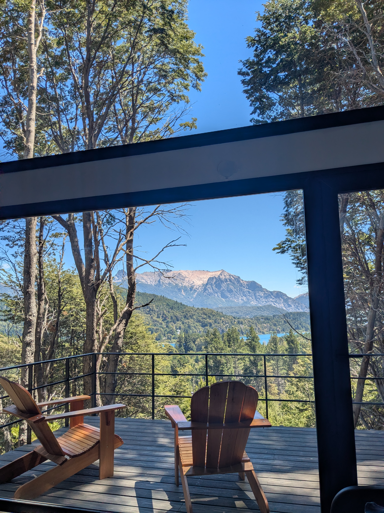

Casa
Bari
Península San Pedro
Bariloche · Patagonia
Bariloche · Patagonia
Casa Bari stands on the forested hillside of Península San Pedro, a private peninsula that juts into the eastern arm of Lago Nahuel Huapi. The house rises as a dark vertical form through native coihue — black corrugated steel against ancient trunks — with a glass front that frames unobstructed views of Cerro López and the lake below.
Eight-meter ceilings open the interior into the canopy. Heated concrete floors run the full ground floor. The kitchen is fully equipped; the leather sofa sits on a black sheepskin rug. Two king-sized bedrooms — one on each level — sleep in total quiet, with only the wind in the trees and the occasional Austral parakeet.
The lake is 10 minutes by car. Cerro Catedral ski resort is 20.

Every room is oriented to the forest and the view. Glass on three sides. The mountain is always present.







Casa Bari stands inside one of the last intact native forests of the Andean-Patagonian range. Four species define this landscape — each with its own character, history, and name.

The name first appeared in writing in 1520, recorded by Antonio Pigafetta, the Italian scholar who sailed with Magellan on the first circumnavigation of the Earth. Near the Strait that now bears Magellan's name, the expedition encountered the indigenous Tehuelche people — known for their height and for the large guanaco-skin boots they wrapped around their feet against the cold.
Pigafetta called them patagones — from the Spanish pata, foot, and possibly from the fictional giant Pathagon who appeared in the popular romance Primaléon (1512). The word carried the full weight of European mythology: giants at the edge of the world, where the map ran out and the imagination took over.
Mapuche traditions hold a different understanding. For them it is simply Wallmapu — the surrounding territory — the earth that has always been there, long before it needed a name invented by those arriving by sea. The giants were never giants. They were people who knew the cold, who wore what the land gave them, and who had been here long enough to know that the mountains were not the edge of anything. They were the center.
Write us to check availability. We respond within 24 hours.
Send an Inquiry